MK20 Agent Deck · P0 模拟器截图（SIM）
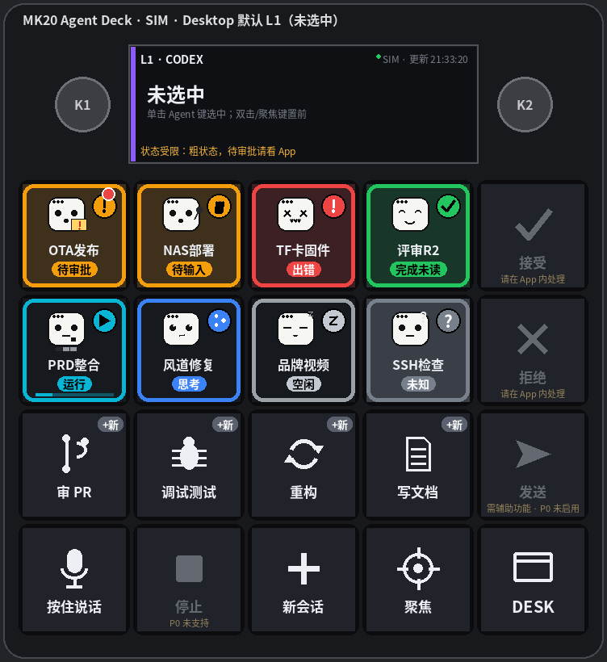
Desktop 默认 L1（未选中）
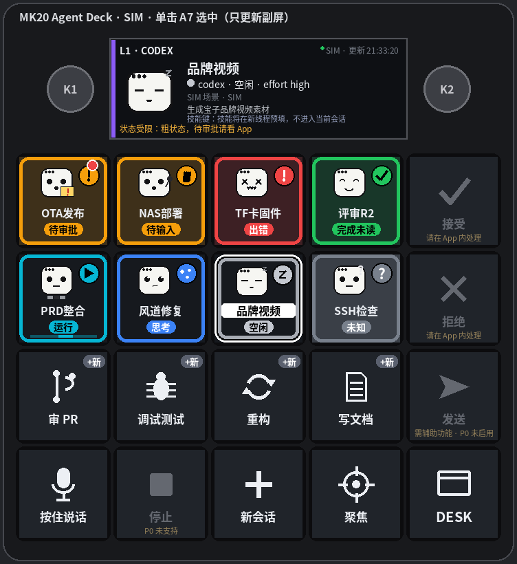
单击 A7 选中（只更新副屏）
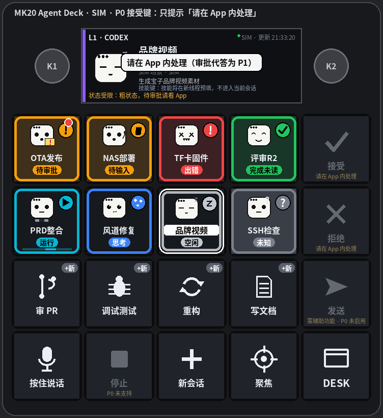
P0 接受键：只提示「请在 App 内处理」
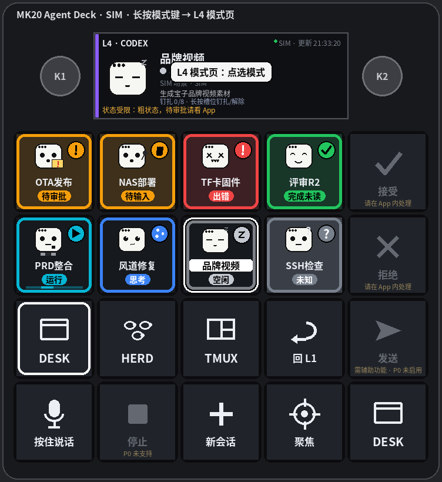
长按模式键 → L4 模式页
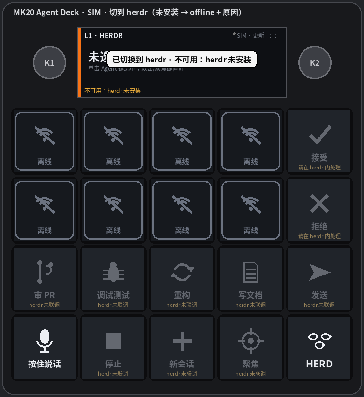
切到 herdr（未安装 → offline + 原因）
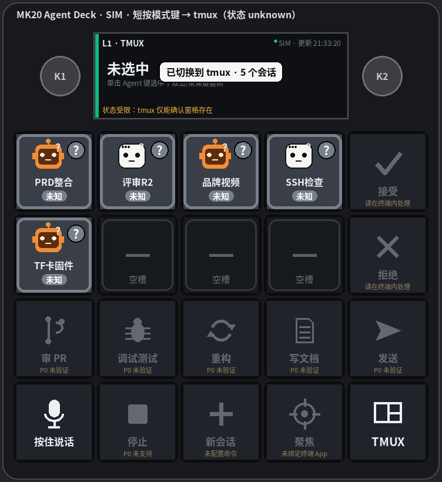
短按模式键 → tmux（状态 unknown）
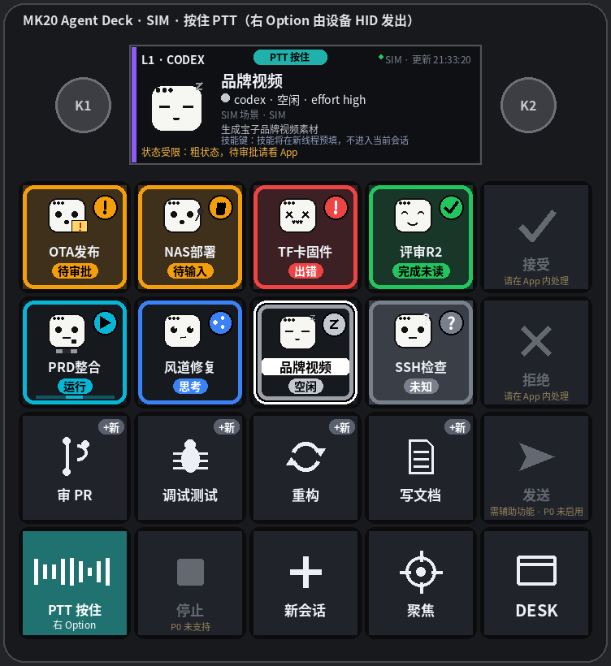
按住 PTT（右 Option 由设备 HID 发出）
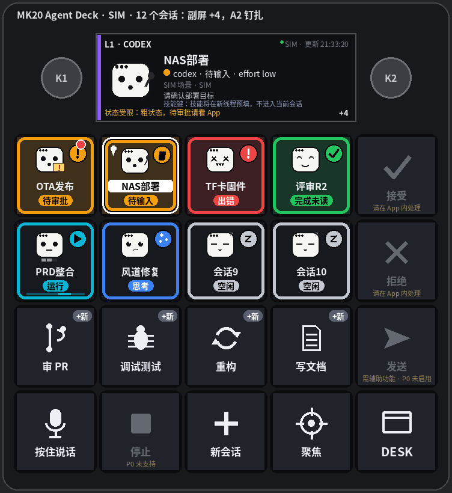
12 个会话：副屏 +4，A2 钉扎
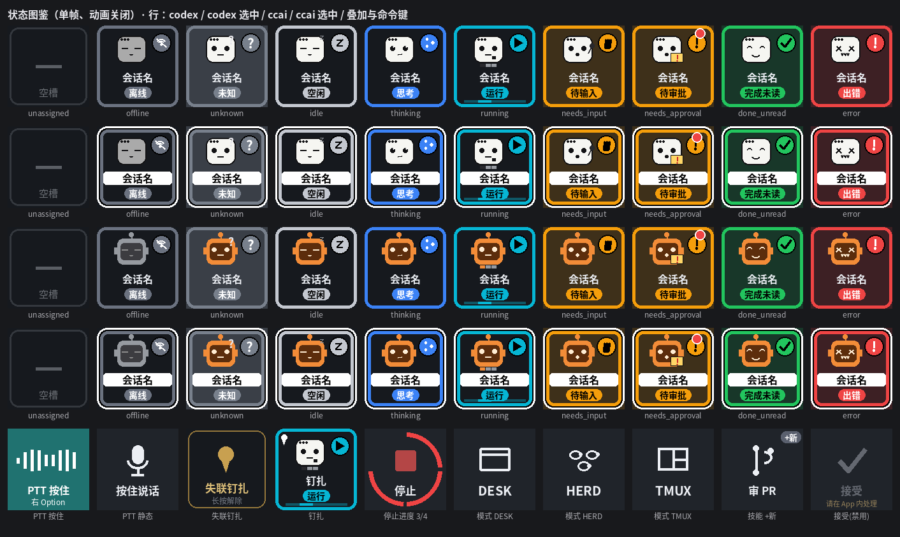
AC10 单帧状态图鉴（动画关闭）
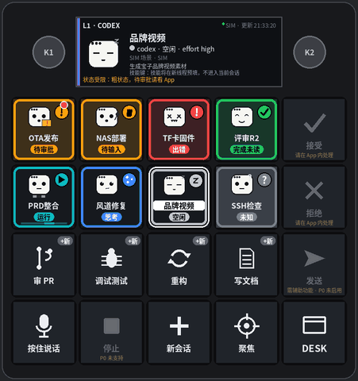
动画预览（全局 ≤8fps，单路注意力动画）
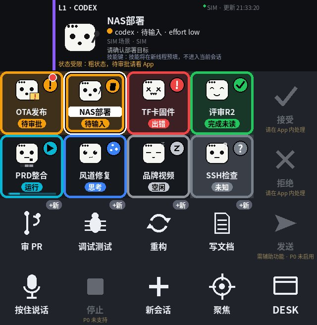
经 Protocol A → MockDevice 回解的整画布（640×656）